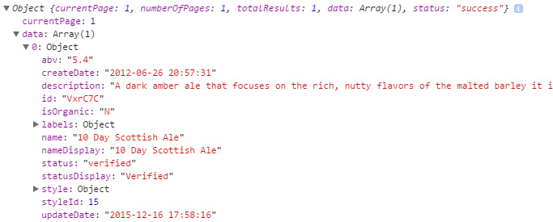

Using JavaScript
Using JavaScript To Construct GET Requests
Utilities like PostMan work great to get up and running learning how to use an API.
However, developers will want to use APIs to write code in their APP to extract information from an API.
Below, We will demonstrate integrating an API call using JavaScript
First, What is JavaScript
There are many ways to describe what JavaScript is. For simplicity, think of JavaScript as a language that you can use to populate content into a website. It takes away and automates much of the HTML scripting away and adds ease for programming.
Below is an example of what a JavaScript GET request looks like. The example that we will use will display a single beer that is called "10 Day Scottish Ale."
Lets break this down a bit further for your understanding.
We first create an instance of an XMLHttpRequest. This allows us to capture data within it and access its functions to the API.
var req = new XMLHttpRequest();
Next we add our key, which you do not want to expose for security reasons to the user. This is appended to the URL and included in the open call.
var apiKey = 'keepKeyPrivate';
Then, you send an open call on the XMLHttpRequest to get the JSON. We include GET to make it a GET request
req.open("GET", url + apiKey, false);
The next line means that we are not sending any additional data along with our GET request
req.send(null);
This line will caputre the GET request and store it as a parsed JSON object.
var response = JSON.parse(req.responseText);
Lastly, the JSON will be outputted to the console, which we will look at below.
console.log(response);
Resposne From the JavaScript GET Request
Below is the response you will get from the
As you can see, You get returned an JSON with one entry, along with a listing of its attributes, such as it's abv, createDate, description, etc.
What we have done thus far is demonstrate how to use JavaScript to get and parse JSON via a GET request.
Next, we will demonstrate how to use a form which will display such a GET request to an end user.
Click below to continue...
Continue